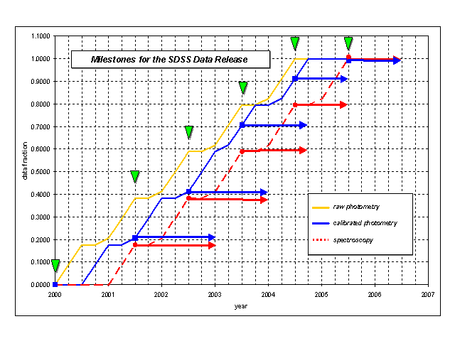

The SDSS Data Release
1. Natural Timescales -- Points of No Return
The survey operations already impose two well-defined "points of no
return" on the data processing. The first occurs when the imaging
data are determined to be good enough that target selection can be
done. The second occurs when the spectroscopic reductions are
determined to be good enough that a particular "tile" on the sky can be
declared done. The first event is a particularly hard boundary: once we
drill plates with hole positions fixed for individual targets and take
spectra, we will not want to reprocess the imaging data, else the
selection effects that go into the spectroscopic sample will be
lost. The penalty for reprocessing and/or recalibrating would
potentially include throwing out some spectroscopic data as well.
Thus there are two opposing requirements on the processing of the
imaging data: one is to make sure the data are the best obtainable and
have the best calibrations, while the other is to reduce the data fast
enough to be able to drill plates. Commitments on timing the data
distribution will be referenced to the two events that are described
above, without any commitment to when they should occur with respect to
the time that the data are taken. (In this regard, we are like the game
of baseball: in baseball, time is measured by innings, not by the clock
on the wall). We propose that for the public data distribution the
latency time is measured from the "points of no return." The data,
which are tied to these natural timescales, form our statistical
sample, and consist of the principal data products.
2. Quantized data release
In order to provide a meaningful versioning of the archive, we
propose to release the data in yearly quanta. The complexity of
the system and the expected repeated verifications of the calibration
require that initially we release the statistical sample with an
approximately 1.5 year delay. We expect that this policy, similar to the
one adopted by COBE, will be necessary for the first two years. Then we
gradually decrease the delay, so that by year 5 of the survey the
latency time will be 1 year.
3. Detailed Milestones for the data release

We have created a chart to describe the precise milestones, their
dates and the data fractions included. We show these for the two main
data components, the photometric catalog and the spectroscopic sample.We
defined several milestones, shown by the triangles on the figure. These
are (i) the beginning of the survey and (ii) the points when we
'quantize' the yearly data sets for the subsequent public release. These
points were chosen to be at mid-year, July 1, since the survey’s primary
focus is the North Galactic Cap. We assume that the survey will begin in
January 2000, as currently planned. We also assume that in the first two
quarters of every year we observe for 6 months, the third quarter is
lost to weather and we can access the survey area for 1 month in the
fourth quarter. The accumulation of the raw photometric data (shown in
yellow) begins in January 2000, and ends in summer 2004. The calibration
of the photometry will take approximately six months in the beginning,
that will shrink gradually to three months by the end (blue line on the
chart). Spectroscopy will begin in 2001, and will last until the summer
of 2005, shown with a red, dashed line. These two lines show the
fraction of data available to us at any point in time.
We propose that the data that reached the 'points of no return' be
quantized at the mid-year milestones, and released at the times shown by
the tip of the arrows. The first two releases will follow the milestone
in 1.5 years, then one with 1.25 years, finally we move to a 1 year
latency. The vertical positions of the arrows indicate the total
percentage of the data in the public domain at that point. This latency
will still give us sufficient time to completely revise our calibrations
should a serious deficiency be discovered during the first half of the
survey.
4. Details of the Data Products
|
Product
|
Size
|
Form
|
| Redshift Catalog |
2 GB |
CD-ROM |
| Survey Description (Status, Calibrations) |
1 GB |
CD-ROM |
| Compact Photometric Catalog |
60 GB |
CD-ROM |
| 1D Spectra |
60 GB |
On-line |
| Atlas Images |
1.5 TB |
On-line |
| Compressed Sky Map |
0.3 TB |
On-line |
| Full photometric catalog |
400 GB |
On-line |
The data sets are prioritized more or less by practicality, by how
easy is it to replicate and distribute them. In the enumerated list we
also include the estimated times that are necessary to produce the given
data products from the moment of observation.The principal set of the
SDSS data products for science use consist of:
- Survey Description
Technically, this is not a product, but rather documentation. It
should be available on-line, as well as on CD-ROM. Most of this is
already contained on the SDSS Sampler #1
CD-ROM.
- Survey Status/Progress
This is the ensemble of many individual data products. We will
provide these on-line with essentially no delays. These include the
stripes/strips observed, fraction of raw photometric data collected to
date, fraction reduced, fraction calibrated, fraction targeted, number
of spectroscopic plates observed, fraction of spectra reduced, fraction
of redshifts obtained, status of the instruments, weather logs,
instrument logs.
- Astrometric Calibrations
These are position calibration coefficients for the full image
frames. Should be available on-line, soon after the first reduction is
made. May be revised later.
- Photometric Calibrations
These are the photometric calibrations of the full image
frames. These should be available with the release of the respective
photometric catalogs, see. #7, and #9.
- Mask Files
Mask files define in detail which sections of an image frame are not
processed for various reasons
(cosmic rays, diffraction spikes,
etc). Available after the final reduction of the photometric data. These
are part of the detailed catalog information, will be released with the
full catalog, #9.
- Redshift Catalog
The objects include galaxies, quasars and a selection of other
sources, including stars of various properties, ROSAT and FIRST
sources. The catalog will also contain all relevant photometric
information, as defined in the Compact Photometric Catalog. This will be
available shortly after the spectra are reduced and processed. Released
according to the milestone chart.
- Compact Photometric Catalog
This product contains most of the scientifically useful photometric
information, in a particularly compact form, to facilitate easy
distribution. In contains all objects, but the number of attributes is
kept at a minimum (id, position, magnitudes, colors, size, ellipticity,
position angle, errors, classification, flags), a total of 400
bytes/object. It is compressed (magnitudes are multiplied by 1000, and
stored as 2-byte integers), and contains only one (the primary)
observation for each object even if there are multiple epoch
detections. This can be generated shortly after the point of no return,
at approximately 6 months after observation, decreasing to 3 months as
the survey evolves. This data set is released on CD’s, according to the
schedule on the milestone chart.
- 1-D Spectra
These are extracted from the 2-D images, and the blue and red halves
have been merged together. They are created during the spectroscopic
reduction process, and will be ready shortly after. They will be
released on-line, in sync with the redshift catalog, per the milestone
chart.
- Full Photometric Catalog
Parameters including positions, magnitudes, radial profiles and
shape parameters for 200 million objects in 5 bands to the detection
limit of the survey. The biggest difference between #7 and #9 is that
this catalog contains several different kinds of magnitudes, 12 radial
profiles in logarithmic bins and their errors, survey coordinates, pixel
coordinates, detailed calibration parameters, and their versions,
various instrumental records. Also, all observations of the objects are
stored here, not just the primaries. This catalog will be placed on-line
per the milestone chart.
- Atlas Images
Cut-outs of the images of detected objects from the full image
frames in 5 colors, 1 billion images in total. These are ready after the
final photometric processing of the data. Due to their size they will be
available on line, and accessible by their locations, organized into
fields. They will be put online per the milestone chart.
- Compressed Sky Map
A 4x4 compressed version of the image frames after removing
objects. This map, along with the atlas images can be used to
approximately reconstruct the original image frames. This data set will
only be created at the very end of the survey, when the whole area is
contiguously covered. We will make this available shortly after.
- Corrected Imaging Frames
The flat-fielded, corrected imaging frames, which were used for
object detection. We do not envisage distributing these, even for the
SDSS collaboration, but they are stored at Fermilab in a tape vault, for
legacy purposes.